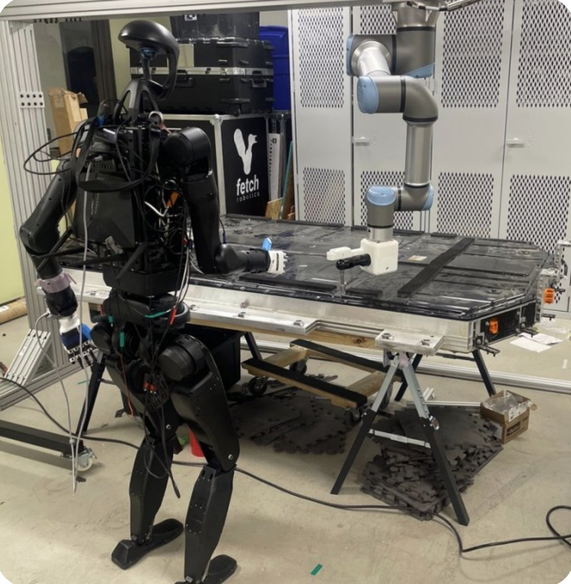
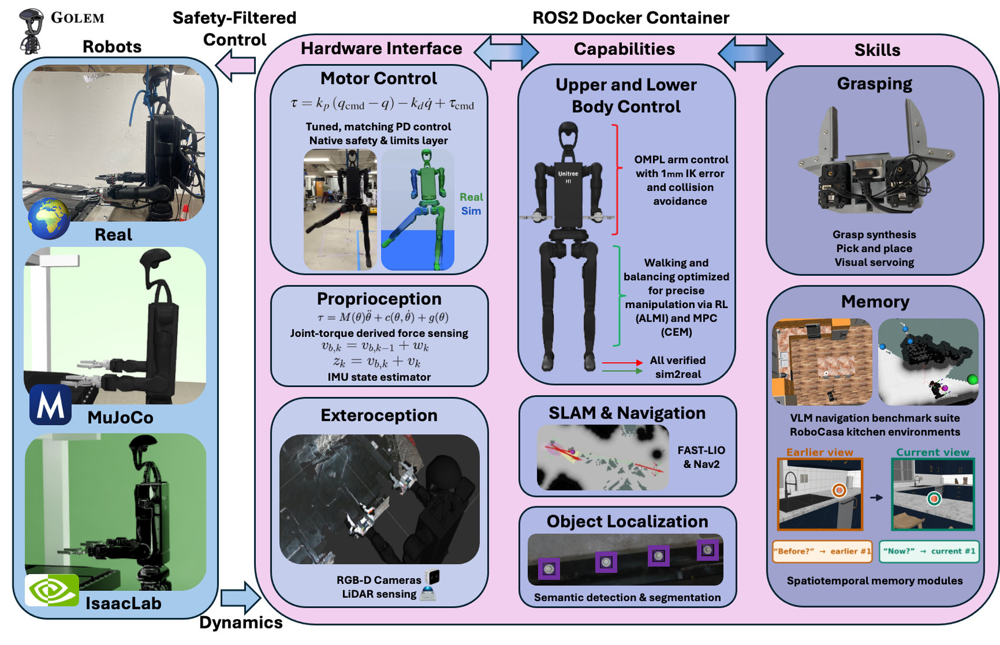
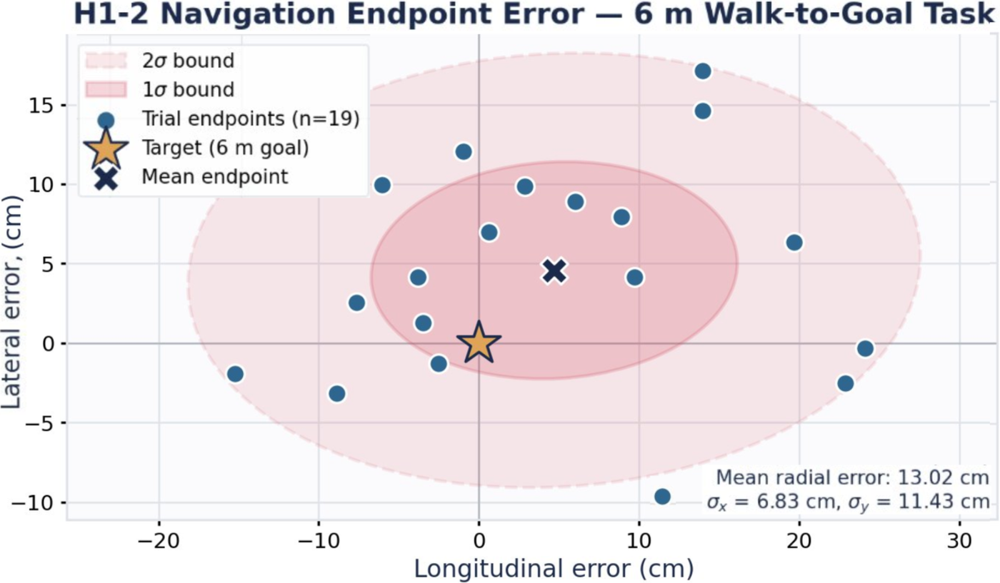
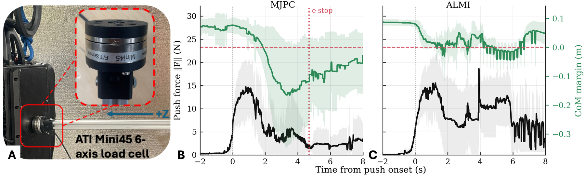
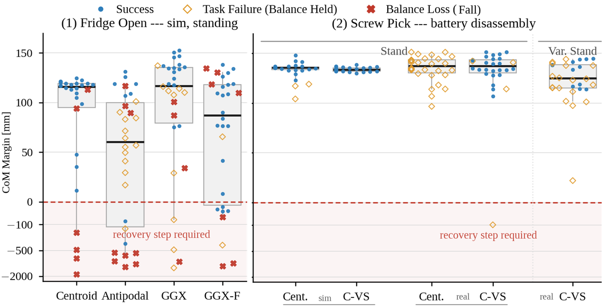

Abstract
Disassembling end-of-life electric vehicle (EV) battery packs is dull and dangerous work, performed almost entirely by humans. We present GOLEM (Generalized Open Library of Embodied Modules), an end-to-end, open-source system architecture for EV battery disassembly with the Unitree H1-2 humanoid robot in which walking, manipulation, dynamic stability, navigation, and spatial memory are independent modules with abstract interfaces, so that methods are easily developed, interchanged, and compared. GOLEM is deployed as a Docker-based ROS 2 abstraction in which MuJoCo and IsaacLab digital twins expose interfaces matching the physical robot. GOLEM's composability and per-module customization enable development and demonstration of humanoid EV battery disassembly, from simulation to reality.
GOLEM provides fair comparison between humanoid modules, enabling evaluation as a capability ladder, in which one module is characterized at a time and added as a rung: LiDAR-inertial navigation places the robot within 13.0 cm of a 6 m goal; a learned standing controller recovers from external disturbances that sampling-based lower-body MPC does not; and grasping loosened fasteners from a real Hyundai Ioniq 5 pack degrades from 97% tethered to 87% free-standing to 37% under navigation-induced pose variance.
Video
System

Results
over a 6 m walk-to-goal
push, learned vs. MPC
three autonomy levels


